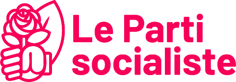

PS
Fondation ou structuration : 1969
Gauche sociale / sociale-démocrate
Une histoire, des recompositions
Le PS est refondé en 1969 sur les héritages de la SFIO. Le congrès d’Épinay de 1971 et l’arrivée de François Mitterrand marquent une nouvelle stratégie d’union de la gauche.
Les présidences Mitterrand et Hollande, les gouvernements Jospin et les recompositions récentes ont nourri des débats durables entre transformation sociale, gestion gouvernementale et alliances. Il n’existe pas une position socialiste intemporelle sur tous les sujets.
Les fondements idéologiques
Les traditions républicaine, socialiste et réformiste se croisent. Jaurès, Blum ou la social-démocratie européenne constituent des références différentes, pas un programme unique.
Approfondir les fondements idéologiques
Un éclairage par l’histoire des idées
Comparer socialisme démocratique, social-démocratie et justice libérale : la réforme sociale peut mobiliser plusieurs conceptions de l’égalité et de la liberté. Le classement critique de Nemo doit être croisé avec l’histoire de la social-démocratie étudiée par Sheri Berman.
Philippe Nemo, Histoire des idées politiques aux Temps modernes et contemporains, PUF, « Quadrige », 2013 [2002]. Référence complète et périmètre de consultation.
Chapitres pour approfondir
- Le socialisme démocratique Édition 2013 · p. 973–988
- La social-démocratie Édition 2013 · p. 989–1014
- John Rawls Édition 2013 · p. 1379–1406
Ces renvois identifient les chapitres utiles. Les extraits accessibles et le sommaire ont été consultés ; ils ne constituent pas une lecture intégrale de l’ouvrage. Cette perspective est croisée avec les autres références du dossier.
Ces questions historiques éclairent les débats autour de Parti socialiste ; elles ne prouvent pas une filiation revendiquée par ce parti et ne remplacent pas ses textes actuels.